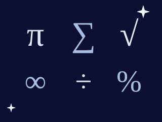
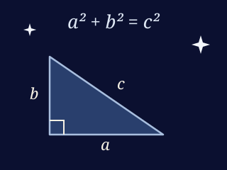
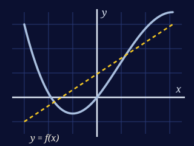
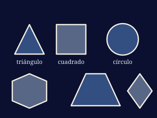

Introducción
a Pensamiento Matemático

Pensamiento Matemático es la asignatura que nos enseña a razonar con números, formas y relaciones. No se trata de memorizar fórmulas, sino de aprender a observar, preguntar, buscar patrones y justificar cada paso de una solución.
¿Para qué sirve?
Nos ayuda a resolver problemas de la vida diaria: calcular un presupuesto, interpretar una gráfica, medir un espacio o decidir con datos. También es la base de la ingeniería, la programación, la ciencia y hasta el arte y la música.



Objetivo de la materia
Que el alumno desarrolle el pensamiento lógico y utilice herramientas aritméticas, algebraicas y geométricas para plantear, resolver y explicar problemas de su entorno.
mira el video con el objetivo de la materia
¿No carga? míralo directo en YouTube